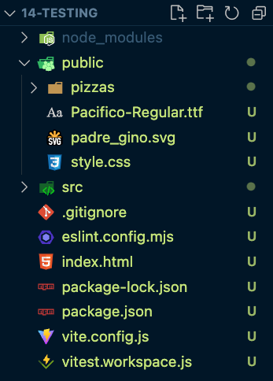
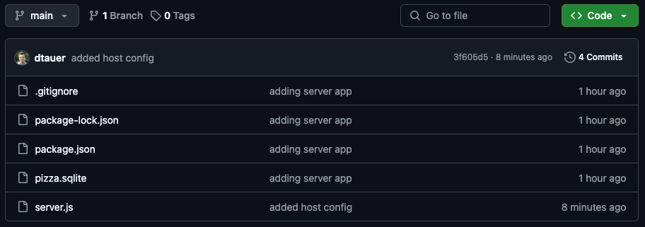
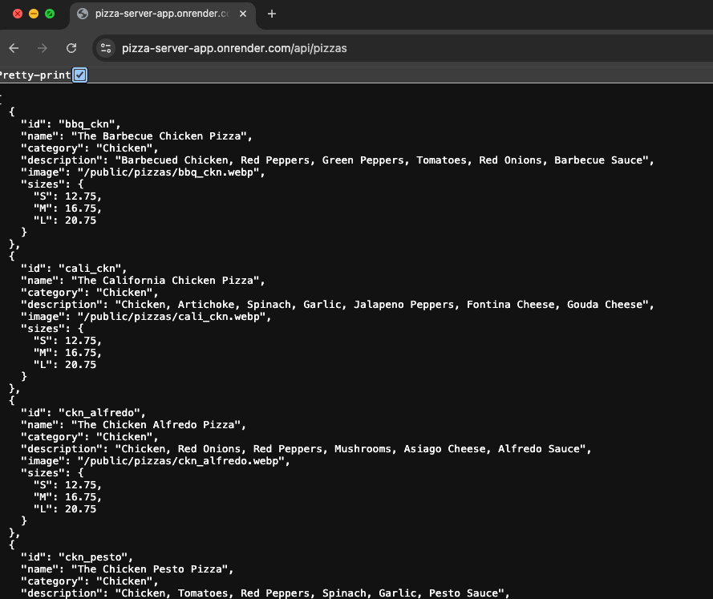
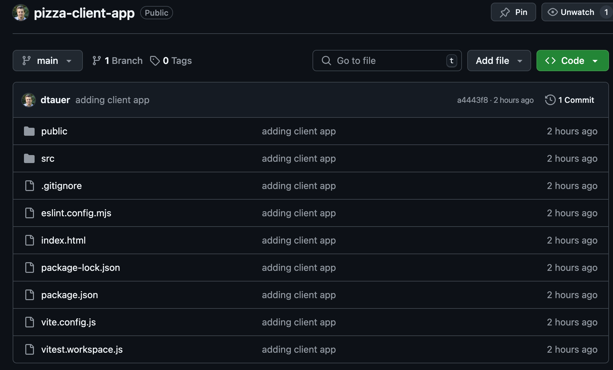
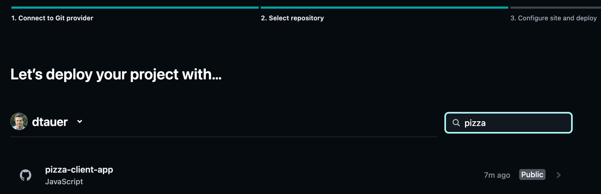
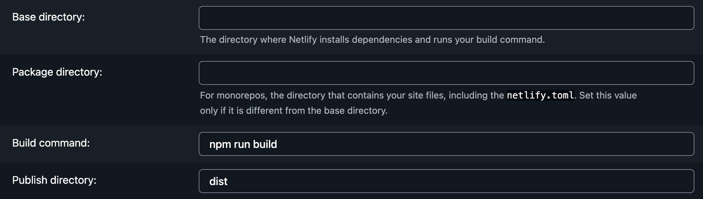

บทเรียน 35 · ก้าวต่อไป (What's Next)
การ Deploy แอป
Deploying the App
📝 มีการพูดถึงการ Deploy ในหลักสูตร แต่ไม่ได้สาธิต คุณสามารถทำตามขั้นตอนด้านล่างหากต้องการ deploy client และ server applications
ด้วย React หรือ client-side framework ใด ๆ deployment ง่ายมาก รัน npm run build เพื่อสร้าง HTML, CSS และ JS files ด้วย Vite แล้วโยนขึ้น static web host ใดก็ได้ โปรเจกต์นี้ต่างออกไปเล็กน้อย เพราะมันเรียก API จาก local Node.js server ดังนั้นเราต้อง deploy ส่วนนั้นด้วย จะมีประโยชน์อะไรกับเว็บไซต์สั่งพิซซ่าที่ไม่มีพิซซ่าล่ะ จริงไหม?
เพื่อ deploy ทั้ง client และ server applications เราต้อง refactor เล็กน้อย และจะใช้ best practices ระหว่างทาง React client app จะ deploy ไปยัง Netlify และ Node.js server app จะ deploy ไปยัง Render ทั้งสองแพลตฟอร์มมี free tier ให้ใช้ และเราจะใช้ workflow ของ GitHub เพื่อให้ deploy ได้ง่ายมาก
ก่อนเริ่ม แนะนำให้แยกโค้ดออกเป็นสองโปรเจกต์ก่อน คือ React app กับ API server เพราะทั้งสองจะถูก deploy ไปคนละที่ และต้องอยู่คนละ GitHub repository ระหว่างทางเราจะบอกทุกครั้งว่ากำลังแก้ฝั่งไหนอยู่
Refactor Static Assets
CSS, fonts และ images ของเราตอนนี้ host อยู่ใน API server application ทั้งหมดนี้ทำเพียงเพื่อความสะดวก เพื่อไม่ต้องคัดลอกข้ามทุก code checkpoint ในหลักสูตร ในโลกจริง สิ่งเหล่านี้ควรอยู่กับ React application
ย้าย folder public จาก API project ไปยัง React project:

Vite ยังสมมติด้วยว่าทุกอย่างใน directory public อยู่ที่ root ของ published files ดังนั้นเปิด style.css แล้วลบ references public ทั้งหมด ตัวอย่างเช่น font ควรโหลดจาก:
src: url("/Pacifico-Regular.ttf");
สุดท้าย อัปเดต stylesheet link ใน index.html head:
<link rel="stylesheet" href="/style.css" />
Deploy Node.js API Application
เรายังมีงานใน React app แต่ก่อนอื่นมา deploy server application นี่เป็น Node.js application ที่สร้างด้วย Fastify จึงต้องใช้ host ที่รองรับ Node เราจะใช้ Render ดังนั้นสร้าง account ที่นั่นหากยังไม่มี
เราจะ deploy ไป Render ด้วย GitHub สร้าง GitHub repo ใหม่สำหรับ API server ในตัวอย่างนี้ใช้ชื่อ pizza-server-app รัน git init ใน local project แล้วเพิ่ม GitHub repo ของคุณเป็น remote repository เพื่อที่เราจะ push app ได้เมื่อพร้อม
ทีนี้ refactor เราได้ย้าย directory /public ไป client app แล้ว จึงลบ static file serving ได้:
server.register(fastifyStatic, {
...
});
image paths ของเราต้องอัปเดตด้วย ลบทุก reference ของ public ใน API responses ตัวอย่างเช่น:
// Any image property like this:
image: `/public/pizzas/${pizza.pizza_type_id}.webp`,
// ...Should have public removed from it:
image: `/pizzas/${pizza.pizza_type_id}.webp`,
ไม่มีเหตุผลให้มี fake wait ห้าวินาทีใน production application (มันถูกเพิ่มเพื่อทำให้ requests ช้าลง เราจึงเห็น loading states ใน local) ลบ Promise:
await new Promise((resolve) => setTimeout(resolve, 5000));
ใครรัก CORS บ้าง? เพราะ client application โหลด data จาก server แยกต่างหาก เราต้องอนุญาตมัน Vite proxy แก้ปัญหานี้ให้ใน local แต่ใช้ใน production ไม่ได้ เราเลือกทางง่ายที่สุดคืออนุญาตทุก origin เพิ่ม Fastify hook นี้บน server
🚨 การตั้ง Access-Control-Allow-Origin เป็น * แปลว่าเว็บไซต์ใดก็ได้บนอินเทอร์เน็ตเรียก API ของคุณได้ ซึ่งพอรับได้สำหรับ API สาธารณะที่มีแต่ข้อมูลพิซซ่าอย่างของเรา แต่ถ้าเป็นระบบจริงที่มีข้อมูลผู้ใช้หรือระบบล็อกอิน ให้ระบุเฉพาะ origin ของเว็บคุณเท่านั้น เช่น https://ชื่อแอปของคุณ.netlify.app
server.addHook('preHandler', (req, res, done) => {
res.header("Access-Control-Allow-Origin", "*");
res.header("Access-Control-Allow-Methods", "GET, POST");
res.header("Access-Control-Allow-Headers", "*");
const isPreflight = /options/i.test(req.method);
if (isPreflight) {
return res.send();
}
done();
})
สุดท้าย Render กำหนดให้ application bind property host กับ 0.0.0.0 แทน localhost ดังนั้นสร้าง property แล้วอัปเดต method server.listen():
// Create a HOST property after the PORT property
const HOST = ("RENDER" in process.env) ? `0.0.0.0` : `localhost`;
// pass it to the server.listen() method:
await server.listen({ host: HOST, port: PORT });
Deploy ไป Render
โอเค เราพร้อม deploy แล้ว Push code ของคุณไป GitHub repo

ไปที่ Render Dashboard แล้วเลือก Deploy a New Web Service เชื่อม GitHub account แล้วเลือก repo pizza-server-app (หรือชื่อที่คุณตั้ง) เป็น source code ของ project ค่าเริ่มต้นทั้งหมดควรใช้ได้ อย่างไรก็ตามตรวจสอบให้เลือก Free/Hobby tier สำหรับ server instance type
เมื่อ server deploy เสร็จ คุณเข้าถึงได้จาก URL ที่แสดงใน dashboard คุณทดสอบได้ด้วยการเปิด endpoint [yourserver]/api/pizzas:

server API ของคุณ deploy แล้ว! และข้อดีคือทุกครั้งที่ push ไป repo มันจะ redeploy ไป Render โดยอัตโนมัติ
Deploy Client Application
ก่อน deploy client application เราต้องปรับบางอย่าง เรามี local development API server และ remote production API server — สอง URLs ที่ต่างกัน เราไม่อยาก hard-code ไว้ใน application และไม่อยากสลับ URL ตอน build app เราจะใช้ Vite environment variables ช่วย สร้างสอง files ที่ root: .env.development และ .env.production แล้วเพิ่ม VITE_API_URL ในแต่ละ file:
# Add this to .env.development
VITE_API_URL=""
# Add this to .env.production
VITE_API_URL="https://[YOUR-SERVER-URL].onrender.com"
สรุปสั้น ๆ คือ Vite จะอ่านไฟล์ .env.* แล้วเพิ่ม variables เหล่านี้ใน property import.meta.env ให้เอง (เฉพาะตัวที่ขึ้นต้นด้วย VITE_ เท่านั้น ตัวอื่นจะถูกซ่อนไว้ไม่ให้หลุดไปอยู่ในโค้ดฝั่งเบราว์เซอร์) (ขึ้นกับว่าเป็น development หรือ production/build) เราไม่ได้ ignore files เหล่านี้ใน Git จึงไม่ควรใส่ sensitive data ใด ๆ ใน environment files ถ้าเรารัน npm run build ให้เพิ่ม production URL หากรัน npm run dev ก็ไม่ต้องเพิ่มอะไร — เพราะ local proxy จะจัดการให้
ให้ type กับ environment variables
ก่อนไปใช้งาน มาทำอีกขั้นที่ใช้เวลาไม่ถึงหนึ่งนาทีแต่คุ้มมาก สร้างไฟล์ src/vite-env.d.ts
/// <reference types="vite/client" />
interface ImportMetaEnv {
readonly VITE_API_URL: string;
}
interface ImportMeta {
readonly env: ImportMetaEnv;
}
โดยปกติ Vite ให้ type ของ import.meta.env มาแบบกว้าง ๆ คือ key อะไรก็ได้เป็น string ผลคือถ้าคุณพิมพ์ import.meta.env.VITE_API_UR ตกตัว L ไปตัวหนึ่ง คุณจะได้ undefined เงียบ ๆ แล้วแอปจะยิง request ไปที่ undefined/api/pizzas บน production
บั๊กแบบนี้เจ็บเป็นพิเศษเพราะ มันไม่โผล่บนเครื่องคุณเลย — ในโหมด dev ค่า VITE_API_URL เป็นค่าว่างอยู่แล้ว ทั้ง "" และ undefined จึงให้ผลต่างกันแค่บน production ที่ deploy ไปแล้วเท่านั้น
พอประกาศ ImportMetaEnv เองแล้ว เราได้สองอย่าง: auto-complete ชื่อ env var ทั้งหมดที่โปรเจกต์นี้มี และ error ทันทีเมื่อพิมพ์ชื่อผิด
ไฟล์นามสกุล .d.ts คือ declaration file — ไฟล์ที่มีแต่ข้อมูล type ไม่มีโค้ดที่รันจริงเลย บรรทัด /// <reference types="vite/client" /> ข้างบนคือการดึง type พื้นฐานของ Vite เข้ามาก่อน (เช่น type ของการ import ไฟล์ .css และ .webp) แล้วเราค่อยเติมของเราทับลงไป — เป็นการ augment แบบเดียวกับ declare module ของ TanStack Router ในบทที่ 18
พูดถึง proxy คุณลบ /public proxy จาก file vite.config.ts ได้ ทีนี้ใช้ VITE_API_URL กัน หา API helpers สามตัวของเรา (getPastOrders.ts, getPastOrder.ts และ usePizzaOfTheDay.ts) แล้วอัปเดต fetch call ให้ใช้ environment variable ตัวอย่างเช่น:
const apiUrl = import.meta.env.VITE_API_URL;
const response = await fetch(`${apiUrl}/api/past-order/${order}`);
คุณต้องทำสิ่งนี้ใน order.lazy.tsx ด้วย:
// create the property at the top
const apiUrl = import.meta.env.VITE_API_URL;
// update checkout
await fetch(`${apiUrl}/api/order`, {
...
})
// update fetchPizzaTypes
const pizzasRes = await fetch(`${apiUrl}/api/pizzas`);
Deploy ไป Netlify
เฮ้อ! ครบแล้ว Push code ของคุณขึ้น GitHub repo แยกต่างหาก เราพร้อม deploy แล้ว!

ไปที่ Netlify สร้าง account หากยังไม่มี แล้วคลิกสร้าง site ใหม่ คุณจะเลือก import project จาก GitHub:

เมื่อตั้งค่า project ค่าเริ่มต้นควรใช้ได้:

🚨 สิ่งที่ต้องรู้เมื่อ deploy โปรเจกต์ TypeScript — Netlify จะรัน npm run build ซึ่งของเราคือ tsc && vite build (ตั้งไว้ตั้งแต่บทที่ 8) นั่นแปลว่า ถ้ามี type error แม้แต่ที่เดียว การ deploy จะล้มเหลว ไม่ใช่ deploy โค้ดพัง ๆ ขึ้นไป · นี่เป็นเรื่องดีมาก แต่จะเซอร์ไพรส์ได้ถ้าคุณเคยชินกับการที่ dev server รันผ่านตลอด (จำได้ไหมว่า Vite ตัด type ทิ้งโดยไม่ตรวจ) · ให้รัน npm run build บนเครื่องตัวเองก่อน push ทุกครั้ง มันจะจับ error ให้คุณภายในไม่กี่วินาที แทนที่จะไปรอสองนาทีแล้วเห็นไฟแดงบน dashboard
เมื่อ site deploy แล้ว คุณเข้าถึงได้ด้วยชื่อที่เลือกตอนตั้งค่า ตัวอย่างเช่น https://[Your-App-Name].netlify.app
ยินดีด้วย!
ตอนนี้คุณมี React client application ที่ deploy บน Netlify และ Node.js server API ที่ deploy บน Render แล้ว!